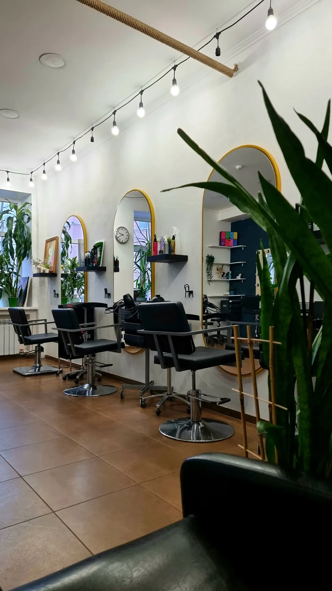
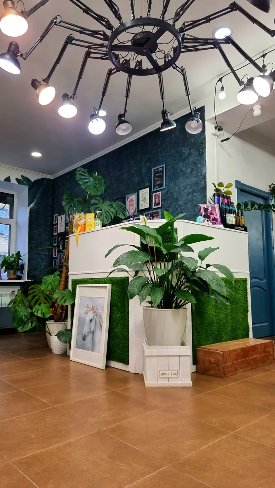
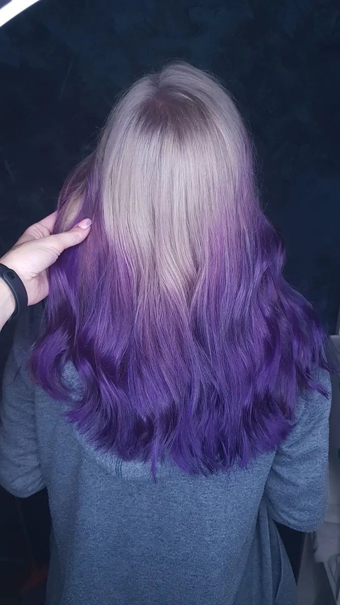
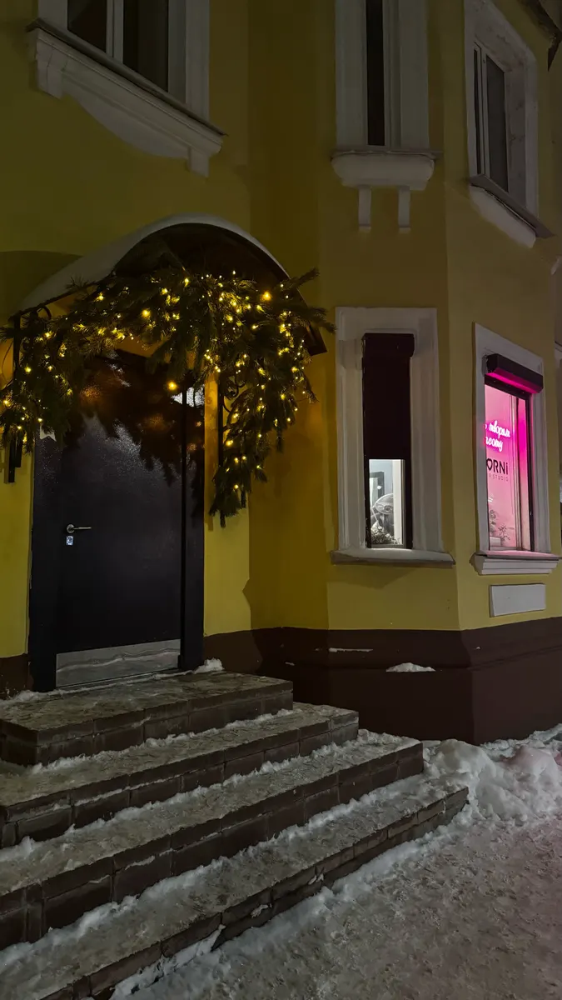

Стрижки · окрашивание · брови и ресницы
Стрижки и окрашивание в Череповце у своего мастера
Короткие стрижки, которые красиво отрастают, бережный цвет и кудрявый метод. Запись онлайн на удобный день и время.
- Короткие стрижки и сложный цвет
- Кудрявый метод и афрокудри
- Ежедневно 10:00–20:00, улица Верещагина, 55

Услуги и цены
Прайс салона с карточки на Яндекс.Картах. Цену окрашивания уточняйте у мастера при записи: она зависит от длины, густоты и расхода краски.
Стрижки, топ-стилист
- Стрижка женская короткая1 500 ₽
- Стрижка на среднюю длину1 800 ₽
- Стрижка на длинные волосы2 500 ₽
- Лечебная стрижка2 700 ₽
- Стрижка мужскаяот 12 лет1 500 ₽
- Стрижка мужская и оформление бороды1 850 ₽
- Стрижка детская1 200 ₽
- Пакет «папа + сын»2 100 ₽
- Пакет «дочки-матери»2 900 ₽
- Стрижка чёлки750 ₽
- Оформление бороды600 ₽
Стрижки, мастер-стилист
- Стрижка чёлки600 ₽
- Оформление бороды500 ₽
- Оформление бороды воском700 ₽
Окрашивание
- Окрашивание тон в тон, темнее, тонированиеот 1 500 ₽
- Окрашивание корней и тонирование длиныот 1 000 ₽
- Камуфляж сединыот 1 000 ₽
- Блондирование корней до 2 смс тонированием или цветным окрашиваниемот 2 500 ₽
- Блондирование корней больше 2 смс тонированием или цветным окрашиваниемот 3 000 ₽
- Блондирование волосс тонированием или цветным окрашиваниемот 3 000 ₽
- Омбре, Airtouch, балаяж, шатуш, мелированиес тонированием или цветным окрашиваниемот 3 000 ₽
- Тонирование ранее блондированных волосот 1 500 ₽
- Цветное окрашивание ранее блондированных волосот 1 500 ₽
- Выход из чёрногоот 1 500 ₽
Укладки и кудрявый метод
- Укладка на брашинг, утюжки600 ₽
- Укладка по кудрявому методу1 000 ₽
- Кудрявый метод: консультация, уход, укладка2 500 ₽
- Афрокудри1 000 ₽
Уход
- Мытьё головы и экспресс-сушкаот 600 ₽
- Уход для волос500 ₽
- Пилинг кожи головы600 ₽
- Парафин для рук500 ₽
Брови и ресницы
- Моделирование и коррекция бровей700 ₽
- Коррекция и окрашивание бровей краской1 000 ₽
- Моделирование бровей и окрашивание хной1 000 ₽
- Ламинирование и окрашивание бровей1 500 ₽
- Окрашивание бровей краской500 ₽
- Ботокс бровей700 ₽
- Окрашивание ресниц краской800 ₽
- Тридинг усиков500 ₽
Цены с карточки салона на Яндекс.Картах. Точную стоимость окрашивания мастер назовёт, когда посмотрит волосы.
Как записаться
- 01
Выбираете
услугу и
времяВ форме на этой странице – с телефона за минуту.
- 02
Отправляете
в WhatsAppТекст уже готов, остаётся нажать «Отправить».
- 03
Салон
отвечаетПодтверждает запись. Можно сразу написать, к какому мастеру хотите.
- 04
Про
цвет –
заранееИдёте на окрашивание – напишите длину, прошлое окрашивание, пришлите фото желаемого цвета. Мастеру проще спланировать время.
- 05
Приходите
в салонУлица Верещагина, 55, центр Череповца, рядом парковка.



За что хвалят на Картах
Стрижки, которые красиво отрастают
Стрижку отмечают 97 % положительных упоминаний в отзывах на Яндекс.Картах.
Бережный и яркий цвет
Окрашивание – 93 % положительных упоминаний. Приходят и после неудачного окрашивания в другом месте.
Мастера, которые слушают
Персонал – 99 % положительных упоминаний, компетентность – 100 %.
Уютно, как дома
Атмосфера – 100 % положительных упоминаний. Живые растения, Wi-Fi, можно прийти с собакой.
Отзывы с Яндекс.Карт
«Лучшие парикмахеры и колористы не только в городе, но и в России, по Череповецким ценам. Умные стрижки, которые идеально отрастают. Самы крутые техники бережного окрашивания. Приезжаю к девочкам из Москвы, т.к. не нашла там ничего даже близкого по качеству за такие деньги. Рекомендую!»
Вероника · 30 декабря 2024
«Пришла в Корни после ужасного окрашивания в другом месте, боялась, что уже ничего не исправить. Все получилось прекрасно💚 Мастер Ольга сделала чудесное цветное окрашивание, волосы блестят, цвет огонь🔥 Салон в центре города, чистый и уютный)»
Анна · 13 апреля 2025
«лучшая парикмахерская! Удобная запись, прекрасный интерьер, мастера, знающие своё дело! стричься только сюда)»
Марьяна · 5 августа 2025
Отзывы с карточки на Яндекс.Картах, без правок.
Частые вопросы
Можно записаться к конкретному мастеру?
Да, напишите имя мастера в сообщении при записи.
Сколько стоит окрашивание?
В прайсе стартовые цены. Итог зависит от длины, густоты и расхода краски – уточняйте у мастера при записи.
Когда вы работаете?
Ежедневно с 10:00 до 20:00, улица Верещагина, 55.
Есть подарочные сертификаты?
Да. Номинал уточните в WhatsApp или по телефону.
Можно прийти с собакой?
Да. Ещё у салона есть парковка и Wi-Fi.
Напишите, к кому и когда
- Адрес
- улица Верещагина, 55, Череповец
- Часы
- ежедневно 10:00–20:00, по записи
- Телефон
- +7 (900) 533-74-55